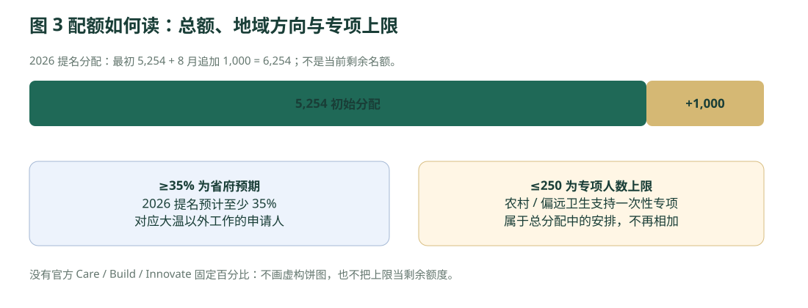

BC · 政府政策与留学路径研究
二 客户适配研究：哪些人更适合BC
哪些人更适合不列颠哥伦比亚省
本章的适配是研究判断，先以第一、三章政府条件为依据；不代表录取、就业、获邀或获批概率。客户画像是情境分类，不是真实客户案例。
| 背景差异 | 优先评估方向 | 为什么值得研究 | 先检查的失败条件 |
|---|---|---|---|
| 中国境内；28岁；护理专业及医院经验；英语一般 | 先核BC职业注册与卫生局招聘；HA或SW | 专业和工作证据可能承接Care需求 | 中国执照不自动转换；临床/英语/注册要求，真实卫生局支持。 |
| BC境内；23岁；HCA毕业；在公立卫生局任33102 | HA直接申请优先判断 | 职业、雇主、Registry形成明确条件链 | 是否直接雇佣、是否长期全职、授权签字、收入及当前合法工签。 |
| BC境内；31岁；私营养老院HCA；PGWP剩8个月 | SW及Care选择因素；单独核其他联邦路线 | Care优先职业可研究，但不是HA | 两年技术经验、SIRS、雇主资格与是否能按期获邀；不保证续签。 |
| 国内；35岁；中专；十年焊接/机械维修 | 先核经验认定、BC雇主、技工认证或注册学徒 | 可以比较直接就业与重读完整课程的成本 | 中国技能证不能自动等于SkilledTradesBC；海外工签、雇主及邀请。 |
| 第三国合法工作；29岁；本科；幼教经验 | ECE等值评估、ECE证书、SW/Care | 第三国专业经验可能有价值；国籍仍决定部分许可 | 所在地不是加拿大工作权；ECE assistant不等于定向ECE。 |
| 国内；21岁；高中；无工作经验；预算8万元/年 | 先做预算和职业基础审查 | 先识别不可行成本可避免错误招生 | 未确认任何本清单BC项目符合该预算；SW两年经验不能用毕业证代替。 |
| 海外；33岁；软件工程；成熟履历及高薪BC offer | SW / EEBC与Innovate高经济影响 | 可用现有工作经验及真实薪资研究 | 旧Tech不是保证；当次工资/分数变化；排除虚高工资。 |
| BC偏远社区；40岁；高中；卫生局直接雇佣保安 | 一次性农村/偏远卫生支持 | 只有现有人群、指定NOC、雇主和地点可能适用 | 9个月、学签经验排除、10月7日截止；不是新境外客户的三年计划。 |
| 国内；45岁；真实经营企业多年；有充足资产 | EI Base或Regional | 允许以经营而非雇员路径产生经济贡献 | 净资产不等于可投资现金；经营协议、岗位、居住及亏损承受力。 |
2.1 不建议作为主要卖点的客户
- 只想用“便宜学校＋低英语＋兼职”完成BC移民、无法承担完整学费和生活成本者。
- 把前台、普通行政、记账、零售主管或餐饮主管当作现行SI稳定入口者：先核12项排除NOC。
- 认为做清洁或保安可以从境外立即进入临时卫生专项者：该专项要求已经为合资格卫生局累计工作，并有严格地点限制。
- 拒绝接受执照评估、雇主书面支持、真实收入或工作许可核查的人。
- 只等“硕博毕业免雇主直通”恢复、没有就业或联邦备选的人。
2.2 2026年配额与选择机制的实际影响

打开原尺寸图 ↗本库绘制 · 非政府原图
{kind=link}
| 最近公布的选择 | 门槛 / 人数 | 对咨询的含义 |
|---|---|---|
| 2026-09-10 Care 幼教 | 最低99；182份邀请 | ECE一年/五年证书仍是前置条件。 |
| 2026-09-10 Care 医疗 | 最低76；143份邀请 | 只适用当次Care职业与筛选；不是HA直接申请分数线。 |
| 2026-09-10 Build 建筑技工 | 最低94；104份邀请 | 须职业与SkilledTradesBC条件；不等于所有技工都94分。 |
| 2026-09-10 兽医方向 | 最低90；少于5份邀请 | “少于5”保持原口径，不估算具体人数。 |
| 2026-08-20 Innovate | 工资分支：≥55/小时且≥110,000/年，TEER0–3，337份；另一分支最低132分、265份 | 工资两条件为AND；与分数分支为OR；不是每名候选人都要同时达到132分。 |
| 2026-09-17 临时卫生支持 | 最低60；33份邀请 | 仍需9个月等资格；截至本报告窗口尚未结束。 |
| 2026-08-25 企业家 | Base116分/11份；Regional116分/5份 | 企业家评分和技能移民评分是不同量表。 |
官网没有给出“与你相同背景的人申请多少、最后成功多少”的完整分母，因此不能从邀请数计算就业概率或个人移民成功率。可量化的是已公布门槛、申请成本、等待时限和哪些条件尚未满足。